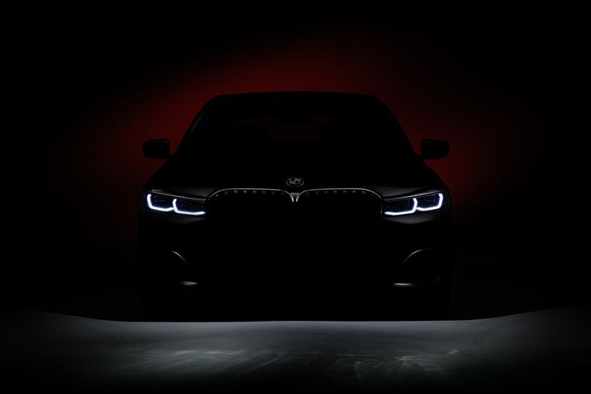
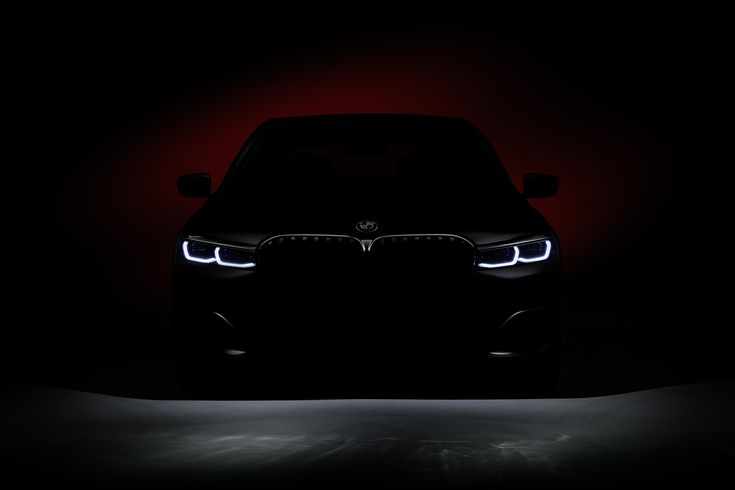

The BMW M5 is a high performance variant of the BMW 5
Series marketed under the BMW M sub-brand. It is
considered an iconic vehicle in the sports sedan
category. The majority of M5s have been produced in the
sedan (saloon) body style, but in some countries the M5
was also available as a wagon (estate) from 1992 to 1995
and from 2006 to 2010. The first M5 model was hand-built
in 1985 on the E28 535i chassis with a modified engine
from the M1 that made it the fastest production sedan at
the time. M5 models have been produced for every
generation of the 5 Series since 1985.
The BMW M3 is a high-performance version of the BMW 3
Series, developed by BMW's in-house motorsport division,
BMW M GmbH. M3 models have been produced for every
generation of 3 Series since the E30 M3 was introduced
in 1986. The initial model was available in a coupé body
style, with a convertible body style made available soon
after. M3 saloons were offered initially during the E36
(1994–1999) and E90 (2008–2012) generations. Since 2014,
the coupé and convertible models have been rebranded as
the 4 Series range, making the high-performance variant
the M4, so that generation of 3 Series saw the M3
produced only as a saloon. In 2020, the M3 was produced
as an estate (Touring) for the first time, alongside the
saloon.
The BMW M2 is a high-performance version of the BMW 2
Series automobile developed by BMW's motorsport
division, BMW M GmbH. As the 2 Series replaced the 1
Series coupé and convertible models, the
first-generation M2 was marketed as the most basic M Car
in the range. The first-generation M2 used the F8x
chassis from the M3/M4, code name F87 and featured a
more powerful and responsive, turbocharged and slightly
modified BMW N55 series engine, while its successors,
the M2 Competition and M2 CS, featured a
high-performance twin-turbocharged engine developed by
BMW M GmbH (S55 engine); improved handling, suspension,
and braking systems; aerodynamic body enhancements;
interior/exterior accents with the tri-colour "M"
(Motorsport) badging and increased weight. The M2 is
unofficially considered as an indirect successor to the
BMW 1 Series M Coupé.
.jfif)
.jfif)
.jfif) 
